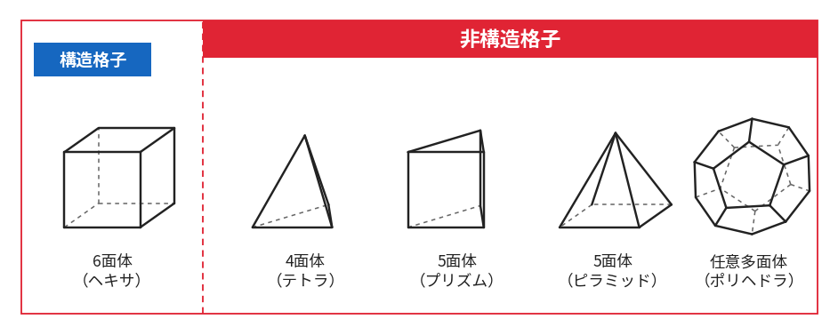

SALOME はフランス電力（EDF）が中心となって開発しているオープンソースの CAE プリ・ポスト処理プラットフォーム。 ジオメトリ作成からメッシュ生成・結果可視化まで一貫して行える。
SALOMEには2種類の配布形態があり、混同しやすいので最初に整理しておく。
| 名称 | 内容 | 配布元 |
|---|---|---|
| SALOME | プリ・ポスト処理プラットフォーム本体。ソルバは付属しない | https://www.salome-platform.org/ |
| Salome-Meca | SALOMEに構造解析ソルバ Code_Aster を統合したパッケージ | https://www.code-aster.org/ |
SALOME 9.15 のインストール手順は、Windows（zipを展開するだけ）とMac（Dockerで公開イメージを利用）で異なる。手順は別ドキュメント SALOMEのインストール（Windows / Mac） にまとめている。
run_salome.bat
で起動する。起動するとこのような画面が立ち上がる。
SALOMEのツールバーには、上図のように数多くのモジュールが並んでいる。主なモジュールは以下の通り。ただし本講義で実際に使うのは次の3つだけである。
| モジュール | 役割 |
|---|---|
| Shaper | パラメトリック CAD（スケッチ・フィーチャーベース） |
| Geometry（GEOM） | 直接モデリング・Python スクリプト対応 |
| Mesh | メッシュ生成（テトラ・ヘキサ・境界層など） |
| ParaVis | 結果の可視化（ParaView ベース） |
| YACS | ワークフロー管理 |
SALOME起動後は、画面左上のプルダウンから使用するモジュールを切り替える。

パラメトリック CAD モジュール。従来の Geometry（GEOM）の後継。
例えば、2Dスケッチを描いて押し出すと、以下のように3D形状が作られる。

GEOM は Shaper より前からある直接モデリング（ダイレクトモデリング）方式のジオメトリモジュールで、CAD モデルの作成・編集を行う。Shaper のようなフィーチャーツリーに基づく履歴は持たないが、Box・円柱などのプリミティブ生成やブーリアン演算（Fuse・Cut・Common）、Python スクリプトによる自動化に強く、SALOME では現在も広く使われている。
例えば、2つの Box をブーリアン演算（Fuse）で結合すると、以下のように1つの形状にまとまる。

| Shaper | Geometry（GEOM） | |
|---|---|---|
| モデリング方式 | パラメトリック（履歴あり） | 直接モデリング（履歴なし） |
| 後からの変更 | 容易 | 難しい |
| 成熟度 | 新しい（機能追加中） | 枯れている |
| Python スクリプト | 対応（発展中） | 充実 |
Shaper / GEOM で作成したジオメトリからメッシュを生成するモジュール。
メッシュとは、解析したい空間（計算領域）を小さなセル（要素）の集まりに分割したものである。CFDでは、このセル1つ1つについて流速や圧力などを計算するため、メッシュの細かさ・形・質が計算精度と計算時間を大きく左右する。メッシュ作成は解析の前処理の中で最も重要な工程といえる。
セルの形には大きく分けて、規則正しく並ぶ構造格子（6面体＝ヘキサ）と、複雑な形状にも柔軟に対応できる非構造格子（4面体＝テトラ、プリズム、ピラミッド、ポリヘドラなど）がある。

| 種類 | 説明 | セルの形 |
|---|---|---|
| テトラメッシュ | 四面体。複雑形状に自動生成しやすい | 4つの三角形の面で囲まれた最もシンプルな立体。NETGEN などのアルゴリズムで複雑な形状にも自動で敷き詰められる |
| ヘキサメッシュ | 六面体。計算精度が高く OpenFOAM と相性が良い | 直方体（サイコロ状）のセル。同じ体積ならテトラよりセル数が少なく、面が壁に沿いやすいため数値誤差が小さい |
| プリズム（境界層） | 壁面付近に層状に生成。境界層の解像度を上げる | 壁に沿って薄い層を積み重ねた三角柱／四角柱状のセル。壁に近いほど薄く、離れるほど厚くする |
| ハイブリッド | ヘキサ＋テトラの混在 | 形状が単純な部分はヘキサ、複雑な部分はテトラというように、領域ごとに異なる種類のセルを組み合わせる |

メッシュの細かさは 1D → 2D → 3D の順に設定する。1D（辺）の分割が2D（面）のメッシュの粗さを決め、2D（面）のメッシュが3D（体積）のメッシュの粗さを決める、という積み上げの関係になっている。
| 階層 | 対象 | 設定内容 | 具体例 |
|---|---|---|---|
| 1D | エッジ（辺） | 分割数・分割比（グレーディング） | Wire Discretisation で
Number of Segments（分割数）を指定する |
| 2D | フェイス（面） | 面メッシュのアルゴリズム | NETGEN 2D Parameters で Max. Size /
Min. Size（面メッシュの最大・最小サイズ）を指定する |
| 3D | ソリッド（体積） | 体積メッシュのアルゴリズム | NETGEN 3D Parameters で Max. Size /
Min. Size（セルの最大・最小サイズ）を指定する |
1D・2D・3D をすべて指定すると、辺の分割数を優先しつつ、面・体積は指定したサイズ範囲でメッシュが生成される。具体的な操作手順は 001_box.md の「1D/2D/3Dを指定してメッシュを制御する」を参照。

| アルゴリズム | 次元 | 特徴 |
|---|---|---|
| Wire Discretization | 1D | エッジを指定分割数で均等分割 |
| Quadrangle（Mapping） | 2D | 四角形メッシュ。ヘキサ化に必須 |
| Hexahedron（i,j,k） | 3D | 構造ヘキサメッシュ。規則的な形状に使用 |
| NETGEN 1D-2D-3D | 3D | テトラ自動生成 |
上の表のアルゴリズムは、SALOMEに同梱された複数のメッシャー（メッシュ生成エンジン）が提供している。SALOME 9.15には以下が入っている。
| メッシャー | 提供アルゴリズム | 備考 |
|---|---|---|
| SMESH内蔵 | Wire Discretisation、Quadrangle (Mapping)、Hexahedron (i,j,k) など | SALOME本体の基本アルゴリズム |
| NETGEN | NETGEN 1D-2D-3D（テトラ）、NETGEN 1D-2D（三角形） | オープンソースの自動メッシャー |
| Gmsh | Gmshの1D/2D/3Dアルゴリズム | オープンソースメッシャーGmshのプラグイン |
| MMG | リメッシュ（メッシュ改善） | オープンソースのリメッシャー |
| MeshGems | MG-CADSurf（BLSURF）、MG-Tetra（GHS3D）、MG-Hexa（Hexotic）、MG-Hybrid | 商用メッシャー。プラグインは同梱されているが別途商用ライセンスが必要 |
本講義で使うのは、SMESH内蔵アルゴリズム（ヘキサ）とNETGEN（テトラ）だけである。
壁面付近に薄い層状のプリズムメッシュを追加する機能。

実際にヒートシンクのフィン表面へ境界層を入れると、以下のようにテトラメッシュの壁面側だけに薄い層状のメッシュが積み重なる。

特定のフェイスやエッジだけ分割設定を変えたい場合に使用。 部分的に細かくしたり、境界条件ごとに名前（グループ）をつけるのに使う。
OpenFOAM のパッチ（境界条件）に対応させるため、フェイスに名前をつける機能。 メッシュ生成前にグループを設定しておくと UNV エクスポート後もパッチ名が引き継がれる。
SALOME で作成したメッシュを OpenFOAM 形式に変換して利用する。全体の流れは以下の通り。

本講義では、メッシャーとしてSALOMEを使った場合のメッシュ作成の基礎およびテクニックを学ぶことを目的とし、最終的にOpenFOAMで計算できる形へ変換するところまでを扱う。
ただし、OpenFOAMでの計算の解説は行わない。OpenFOAMの設定ファイルも同封しているため、興味があれば取り組んでほしい。
各演習のデータ（SALOMEから出力したUNVメッシュ・OpenFOAMケース一式・計算結果）は、リポジトリの以下のフォルダにある。
| 演習 | データフォルダ | 内容 |
|---|---|---|
| 001 Box | data/001_box/run001_of13 |
Mesh_4.unv、OpenFOAM 13の定常流体解析ケース（結果
90/） |
| 001 Box | data/001_box/run001_of2512 |
同じ解析のESI版OpenFOAM（v2512）ケース（simpleFoam、結果
80/） |
| 002 撹拌機 | data/002_Stirrer/sample/mesh/mesh_of13 |
Mesh_1.unv、UNV変換・topoSet・createBafflesのケース（OpenFOAM
13） |
| 002 撹拌機 | data/002_Stirrer/sample/mesh/mesh_of2512 |
同上のESI版OpenFOAM（v2512）ケース |
| 002 撹拌機 | data/002_Stirrer/sample/mesh/master_curve_of13 |
羽根可動化テスト（moveDynamicMesh）のケース（OpenFOAM 13） |
| 002 撹拌機 | data/002_Stirrer/sample/mesh/master_curve_of2512 |
同上のESI版OpenFOAM（v2512）ケース |
| 002 撹拌機 | data/002_Stirrer/sample/mesh/fullmodel_of13 |
全周（360°）フルモデル組み立てのケース（OpenFOAM 13、変形済み羽根） |
| 002 撹拌機 | data/002_Stirrer/sample/mesh/fullmodel_of2512 |
同上のESI版OpenFOAM（v2512）ケース |
| 003 ヒートシンク | data/003_heatsink/run001_of13 |
Mesh_1.unv、OpenFOAM
13の熱流体・固体連成ケース（foamMultiRun） |
| 003 ヒートシンク | data/003_heatsink/run001_of2512 |
同上のESI版OpenFOAM（v2512）ケース（chtMultiRegionFoam） |